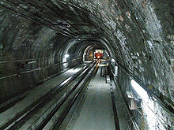
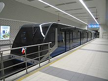

Тюнель: вид тоннеля

Новый фуникулёр (тюнель-2)
Тюнель (тур. Tünel) — старинная карликовая линия метро (открыта в 1875 году) всего с двумя станциями, расположенная в европейской части Стамбула. Тюнель является одной из самых старых и одной из самых коротких линий метро в мире.
Протяжённость линии — 573 метра, на линии курсируют всего два вагончика. По конструктивному исполнению данный вид транспорта представляет собой подземный фуникулёр. Интервал движения вагончиков 3−5 минут. Ежедневно Тюнель перевозит 15 000 человек, за год вагончики преодолевают путь в 37 066 км.
Тюнель был спроектирован французским инженером Эженом Анри Гаваном и совместно с англичанами построен в 1871—1875 годах. Официальное открытие тюнеля состоялось 17 января 1875 года. В первый год работы подземки городское население боялось ездить по этой подземной трассе. Для решения этой проблемы был введён дополнительный вагон, который перевозил животных. В результате было продемонстрировано, что данный вид транспорта безопасен.
В 1910 году Тюнель был электрифицирован, до этого времени вагончики двигались на конной тяге. В 1939 году Тюнель был национализирован и стал частью скоростной транспортной системы города, IETT (İstanbul Elektrik Tramvay ve Tünel). В 1971 году Тюнель был отремонтирован и модернизирован, а старые деревянные вагоны были заменены новыми. В настоящее время Тюнель функционирует наряду с обычным (и полностью независимым от него) метрополитеном (см. Стамбульский метрополитен), открытым в 2000 году (одна линия из 6 станций), а также с более развитым лёгким метро, появившимся в 1989.
В истории Тюнеля есть и чёрная дата — 6 июля 1943 года, когда из-за выхода из строя электрического кабеля 1 человек погиб и 6 человек получили ранения.
Стоимость проезда по состоянию на июнь 2009 года - 1 лира.
В июле 2006 года была открыта ещё одна ветка подземного фуникулёра. Как и в старом тюнеле, новая ветка имеет всего две станции, одна из которых находится на площади Таксим, а другая в районе Кабаташ.